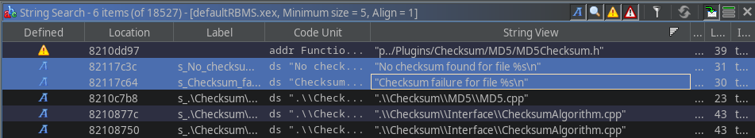
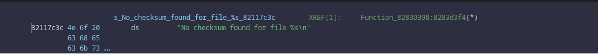
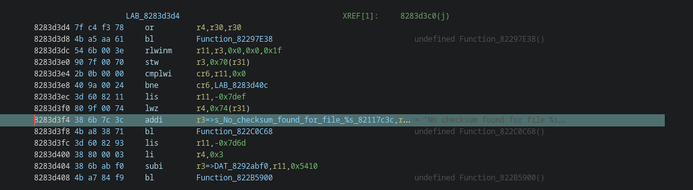
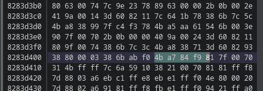

InvoxiPlayGames made a much better and easier tutorial about this on the Milo Modding Wiki.
Have you ever tried to mod a Harmonix game after Guitar Hero 2's 360 port and noticed the game give an error on startup? That is due to the checksum which validates the data files and is surprisingly simple to patch out with Ghidra and a hex editor (such as ImHex or 010 Editor).
Once the CodeBrowser window is open it should ask whether to run auto-analyze, click on Yes and then the Analyze button. This will take a bit, once completed it should ask you about visiting Entry. Once the analysis has completed, click on Search > For Strings and filter for the word "checksum".
Notice the two highlighted strings in the photo "No checksum found for file %s\n" and "Checksum failure for file %s\n", these two strings will lead us towards the HandleError function. Double click on one of them.
This is the string of words, we want the actual code that uses this. To go the code that uses this string, click on the Function text displayed to the right of the green "XREF" text.
This is the segment of disassembled code that handles checksum errors. The last function in that block is always "HandleError". Highlight the last function and click on Window > Bytes.
Note down the 4 highlighted bytes, in my case "4B A7 84 F9". Copy the whole line and the lines above and below. Open the Edited.xex from the XexTool Folder in your hex editor of choice. Find the 3 lines of bytes you copied from Ghidra in the binary. Replace the 4 bytes you noted down earlier and replace them with "60 00 00 00", This is the PowerPC No-Operation command, this will cause the game to completely skip over the function that errors out the game. Follow the previous instructions for the other checksum string you searched for earlier.
After using a hex editor to nop the 2 HandleError functions out the game you might notice the game does not boot on console now, giving a "Game Error", This is because retail RGH/JTAG consoles do not support unencrypted XEX files (if you are running RGLoader you should be fine). To re-encrypt the game:
This should now allow you to boot the game with edited Ark files.